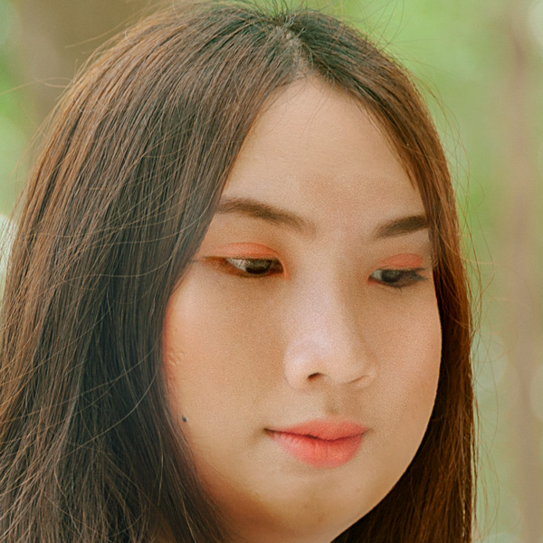
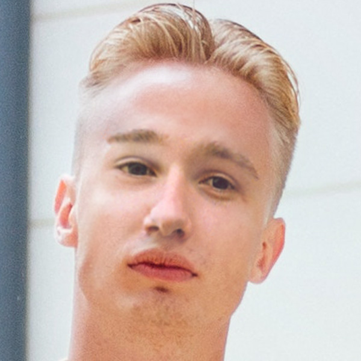
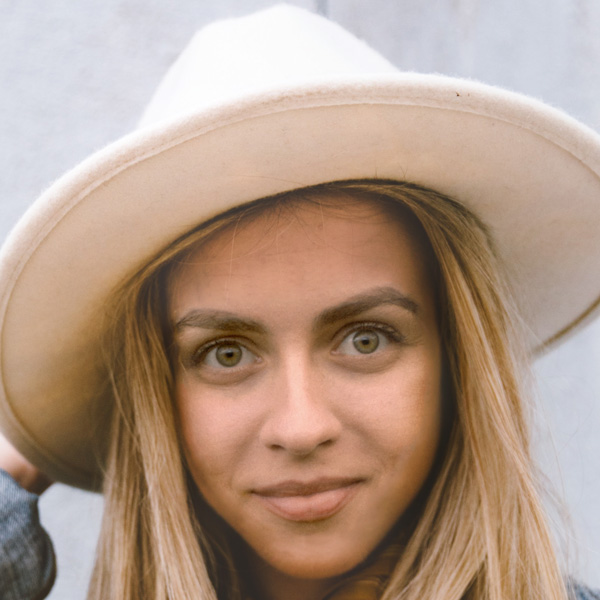
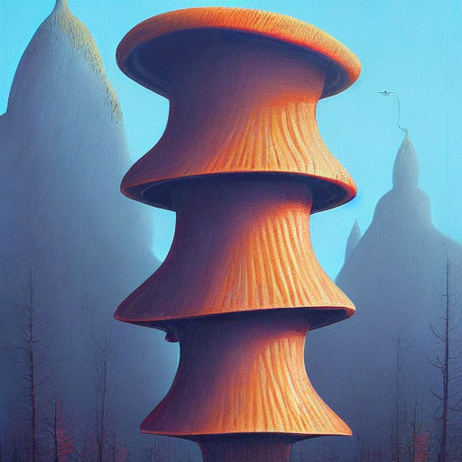
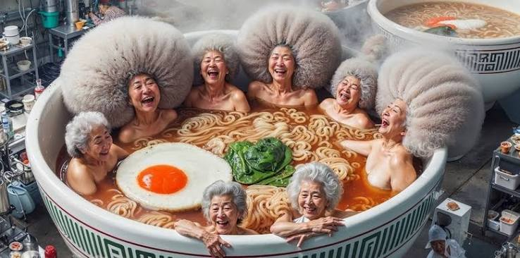
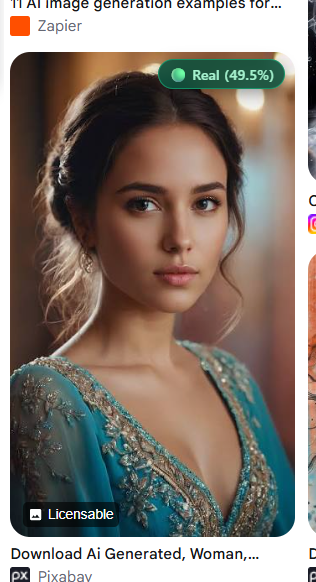
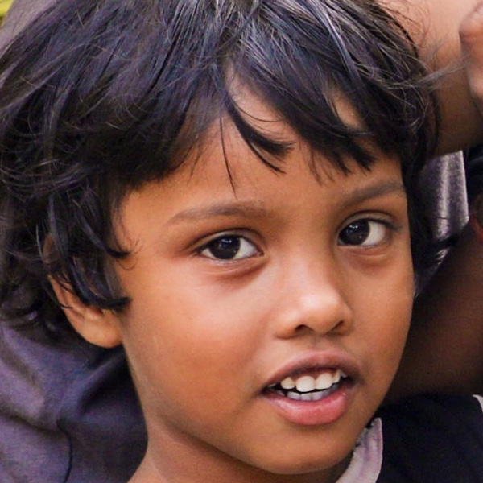

Benchmarking Deepfake Facial Manipulations, Full Generative AI, and Real Photography
python src/inference/app.pyIn these images, an authentic real photograph was digitally manipulated using deep learning: specific facial regions (eyes, mouth, nose, facial structure) were synthesized and blended.
Real subject photo where eyes and mouth were reenacted using an autoencoder. Exhibits blending seams and boundary gradient shifts.

Targeted facial attribute modification. The surrounding background is real, but the inner facial zone contains generative interpolation artifacts.

Subtle single-attribute manipulation designed to evade simple perceptual filters, detectable via spatial texture boundary analysis.

Synthesized from noise prompts using Latent Diffusion Models (Stable Diffusion, Midjourney). The entire canvas exhibits periodic upsampling harmonics in 2D FFT.
Synthesized by Latent Diffusion autoencoder. Contains periodic upsampling artifacts in the frequency domain.

Complex generative AI synthesis with multiple subjects, verified via 2D FFT spectral high-frequency harmonics.

Photorealistic generative AI portrait exhibiting synthetic frequency distribution and CLIP semantic cues.

Full-frame diffusion generation with characteristic latent spectral cross-peaks in 2D FFT.
AI synthesized concept art exhibiting transposed convolution grid harmonics.
From the CIFAKE benchmark test set (Synthetic generative sample).
Captured through physical camera lenses and optical sensors. Naturally follows the universal 1/f² power decay without periodic upsampling grid artifacts.
Natural photograph captured by a physical camera sensor adhering to smooth 1/f² power decay.
Pristine real-world scene with natural optical sensor noise and smooth 2D FFT spectrum.
Physical lens capture with natural organic textures.
Natural scene devoid of synthetic transposed convolution grid artifacts.
Authentic human portrait captured by standard camera sensor with natural skin pores and eye reflections.

Pristine authentic subject photograph exhibiting smooth continuous natural facial gradients.